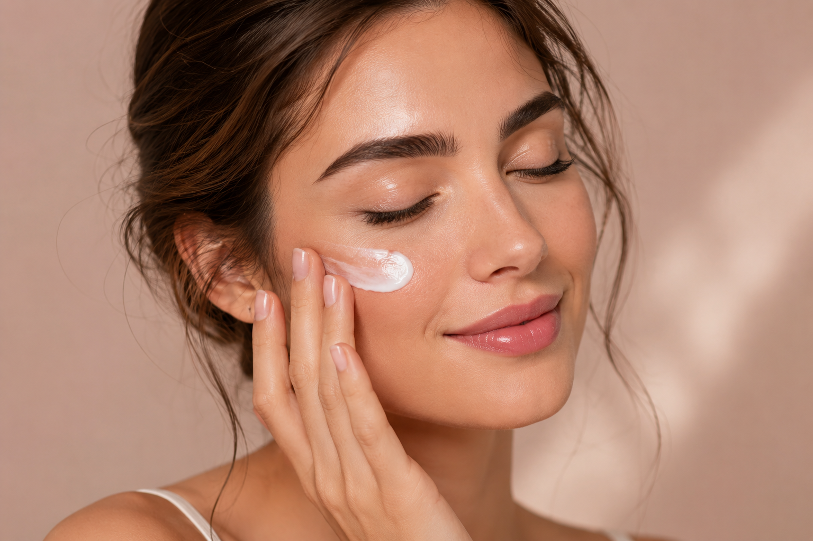
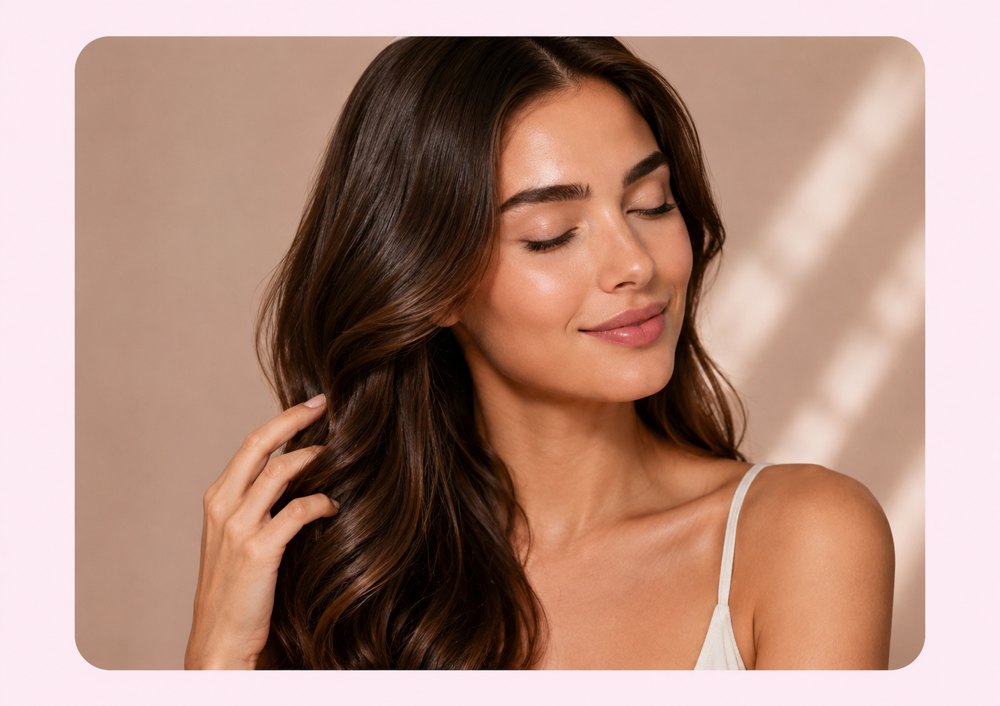
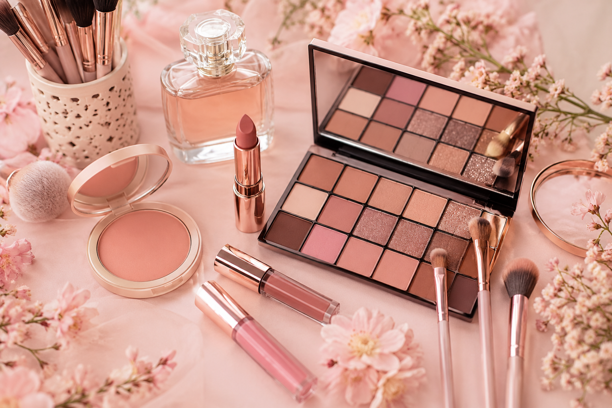

العناية بالبشرة تمنحك إشراقة وثقة أكبر بنفسك، والروتين البسيط اليومي يصنع فرقًا كبيرًا.

الشعر الصحي يحتاج إلى ترطيب وعناية مستمرة للحفاظ على نعومته ولمعانه.

المكياج فن بسيط يبرز الجمال الطبيعي ويمنحك إطلالة أنيقة وناعمة.